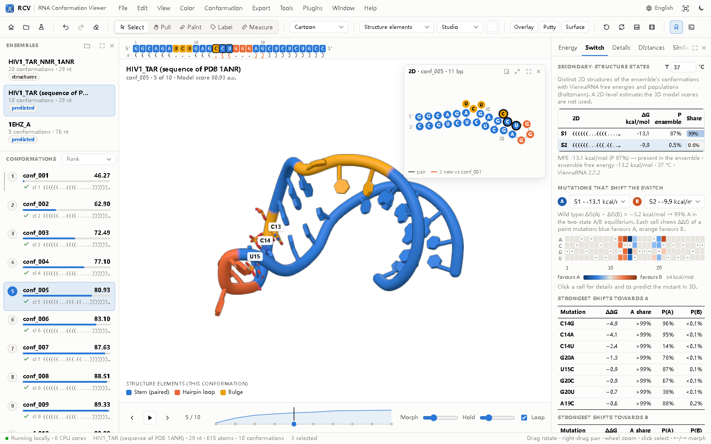
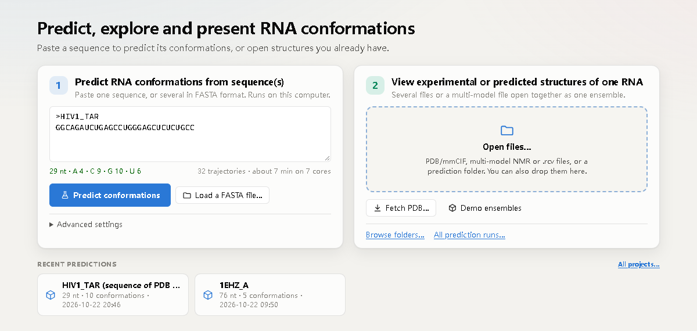
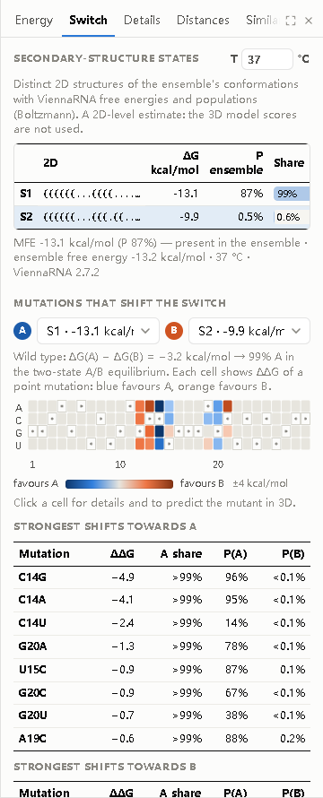
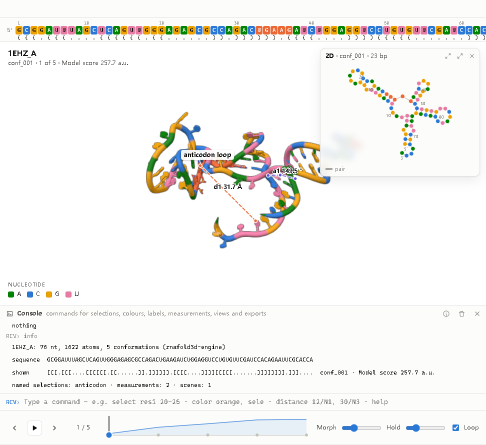
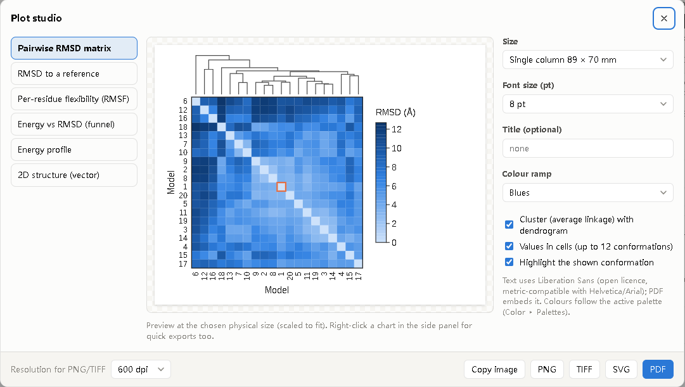
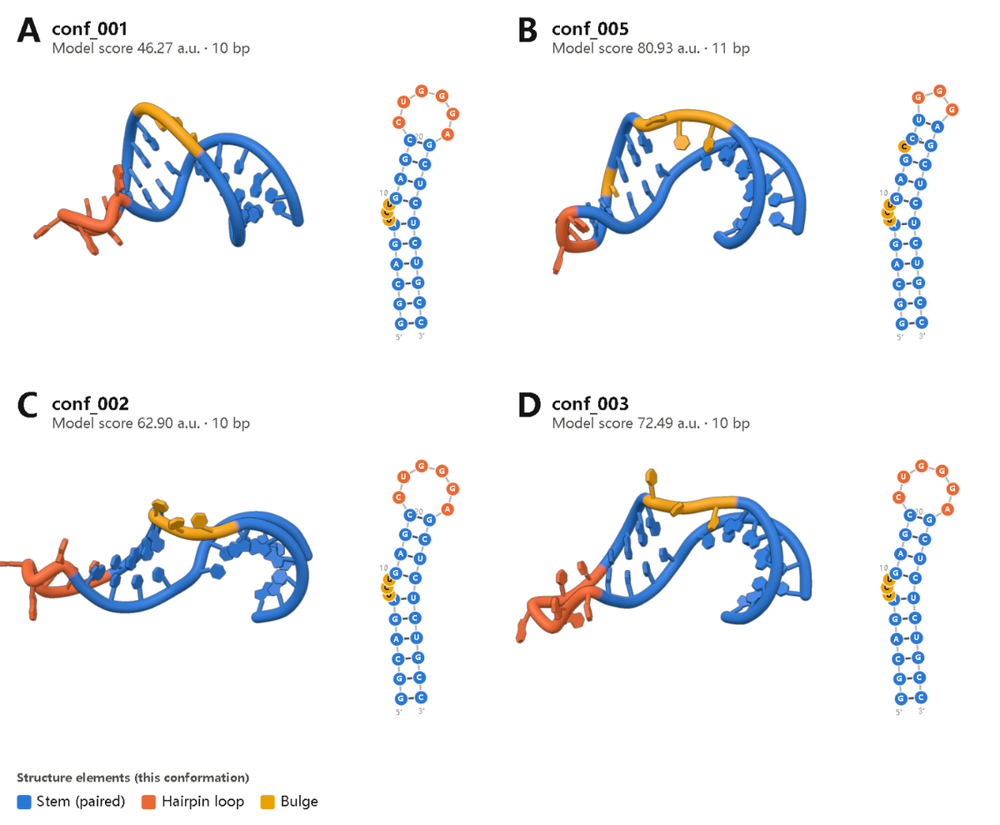
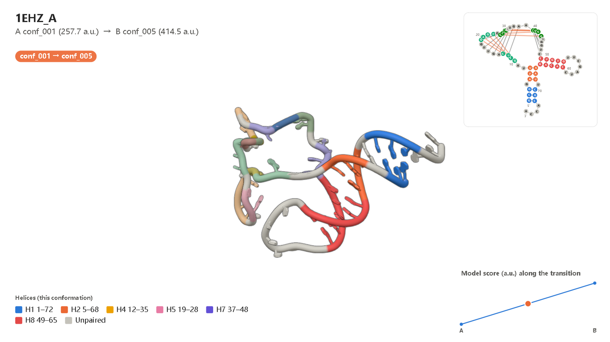

RCV — RNA Conformation Viewer · user guide
RCV predicts, explores and presents the conformations of an RNA. It combines the rnafold3d prediction engine (physics-inspired, no deep learning) with an interactive viewer in one desktop application: paste a sequence or a FASTA file, or open your own structures; pull and morph between conformations while the energy and the 2D structure follow; analyse which mutations shift a switch; and share the result as one .rcv file, publication figures, videos or an interactive web page. Everything runs on your computer: predictions use your CPU cores, the 3D view uses your GPU; no data leave the machine (except Fetch from the PDB, which downloads an entry only when you ask for it).
Version 0.6.0, 2026-10-24. Earlier names: RNAconfSwitch (0.4), RNAconformer Viewer (0.3). Free and open-source software (GPL-3.0). Author: Zixiang Wang (princewang2018@gmail.com).

1. Install and start
Desktop installers — download them from www.rnaconfviewer.com. They include Python, the engine, ViennaRNA and the demo data (licences of the bundled software: THIRD-PARTY-NOTICES.txt); nothing else needs to be installed.
- Windows 10/11 (64-bit) —
RCV-<version>-Windows-x64-Setup.exe. Setup speaks English, German, Spanish, French, Italian, Japanese, Korean, Portuguese or Russian, installs RCV for you or for all users and adds Start-menu entries: RCV, RCV with demo ensembles, RCV User Guide, What is new in RCV and the Plugin Developer Guide; a desktop shortcut and opening.rcvfiles with a double-click are options. The installer is not code-signed yet, so Windows SmartScreen may warn: choose More info ▸ Run anyway. - macOS 14 (Sonoma) or later (Apple Silicon or Intel) — open the
.dmgand drag RCV to Applications; the disk image also holds the user guide. The app is not notarised yet: the first time, right-click RCV ▸ Open (or System Settings ▸ Privacy & Security ▸ Open Anyway). - Linux (64-bit x86) —
RCV-<version>-Linux-amd64.debfor Debian, Ubuntu and Linux Mint (sudo apt install ./RCV-<version>-Linux-amd64.deb) orRCV-<version>-Linux-x86_64.rpmfor Fedora, RHEL, Rocky, AlmaLinux and openSUSE (sudo dnf install ./RCV-<version>-Linux-x86_64.rpm); Ubuntu 20.04, Debian 11, Fedora 32, RHEL 9 or newer. They add thercvcommand and a menu entry (with RCV with demo ensembles and RCV User Guide) and open.rcvfiles. RCV opens in a Chrome, Chromium or Edge app window when one is installed, otherwise in your default browser, and quits when that window is closed. Remove it withsudo apt remove rcvorsudo dnf remove rcv.
To build the installers yourself, see packaging/README.md.
From the source folder (Python ≥ 3.10 with numpy and scipy; ViennaRNA for predictions and the switch analysis; optional pip install pywebview for a native window):
cd RNAconformer
pip install -e . # or: export PYTHONPATH=src
rcv # start page
rcv tar.rcv # open an .rcv file (with its saved view)
rcv runs/my_rna # open an rnafold3d run (keeps engine scores)
rcv models/*.pdb # several files of the same RNA, one conformation each
rcv 1ANR.cif # multi-model file: one conformation per model
rcv --demo # HIV-1 TAR NMR ensemble + two predictions
python -m rcv ... # same without installing the commandOptions: --shell auto|webview|window|browser|none, --port 8765, --projects-dir DIR (default Documents/RCV/projects, also in View ▸ Preferences), --chain B, --keep-running, --verbose.
Command-line tools (no window) — the same tools are in the Tools menu of the window (section 4):
| Command | What it does |
|---|---|
rcv convert PATH… -o x.rcv | structures, an NMR file or a prediction folder → one .rcv file |
rcv info x.rcv [--methods] | sequence, conformations, 2D structures, size, stored methods text |
rcv extract x.rcv -o DIR [--multi] | one PDB per conformation (or one multi-model PDB) |
rcv batch seqs.fasta [-o DIR] | predict every sequence of a FASTA file, one .rcv each, plus batch_summary.csv |
rcv html x.rcv -o page.html | interactive single-file web page (section 13) |
rcv engine predict … | the prediction engine itself (same as the rnafold3d command) |
| Tools menu | Same as |
|---|---|
| Convert structures to .rcv… | rcv convert (choose files or a folder, name the output) |
| Inspect an .rcv file… | rcv info (contents, conformations, 2D structures, stored methods text) |
| Extract conformations as PDB… | rcv extract (one ZIP of PDB files, or one multi-model PDB) |
| Batch prediction from a FASTA file… | rcv batch |
| Fetch a structure from the PDB… | console fetch (Ctrl+Shift+F) |
| Interactive HTML page · Figure panels · Plot studio | rcv html · Export menu |
Settings, logs and plugins live in %APPDATA%\RCV, ~/Library/Application Support/RCV or ~/.local/share/rcv; settings, plugins and projects of RNAconfSwitch 0.4 are still found.
2. Start page

The start page is one box and four buttons:
- Paste a sequence (plain or FASTA; T is read as U) and press Predict conformations (or
Ctrl+Enter). The line under the box checks the input as you type and estimates the run time. - Nothing entered? Predict runs the demo sequence (HIV-1 TAR, 29 nt) and says so.
- Several sequences (multi-record FASTA; a dot-bracket line after a sequence is used as its known 2D): RCV lists them with a check per sequence and offers Predict N sequences — a batch run, one prediction after another, each on all chosen cores (up to 100 sequences).
- Open files… — an
.rcvfile, PDB/mmCIF files, a multi-model (NMR) file, a prediction folder or a workspace. Files can also be dropped anywhere on the window. - Fetch PDB… — type a 4-character PDB ID (e.g.
1ANR,1EHZ), optionally a chain; RCV downloads the mmCIF from the RCSB PDB intoprojects/fetched/and opens it. Nothing is downloaded unless you do this. - Demo ensembles — the HIV-1 TAR NMR ensemble and two predictions.
- Advanced settings (closed by default): name, number of conformations to keep, sampling depth (Fast / Standard / Thorough = 2 / 4 / 8 trajectories per kept conformation), CPU cores, a known secondary structure (dot-bracket), the random seed, Load a FASTA file…, Fill in the demo sequence, Browse folders…, All prediction runs….
- Recent predictions — the latest runs in the projects folder (including RNAconfSwitch 0.4 runs).
3. Prediction progress and batch results
A prediction shows its stages (secondary structures → 3D sampling → validation and selection → opening the viewer) with live details, a progress bar with the time left, and plain-language notes (ViennaRNA hypotheses and energies, cores used, rejected trajectories and why, conformations kept). Cancel stops the engine. When finished, the viewer opens; the run folder contains PDB + mmCIF + manifest and <name>.rcv, which makes reopening it from Recent predictions instant.
A batch shows one stage per sequence with its current step and an overall time estimate. When it ends, a results table lists every sequence (conformations, best score, MFE ΔG, number of 2D states, time, status), and you choose the prediction to open (radio button or double-click, then Open selected in the viewer). All others stay in the batch folder as .rcv files (with batch_summary.csv and batch.json) and can be opened later. A failed sequence does not stop the batch.
Run time grows with length and sampling: on an 8-core laptop a 29-nt hairpin with Standard sampling takes about 5–7 minutes, a 12–14-nt hairpin with Fast sampling 10–60 s.
4. The window
| Area | What it does |
|---|---|
| Menu bar | File (new prediction, open, save .rcv, workspace, Fetch from the PDB, PDB/CSV), Edit (undo, redo, clear, selection, annotate), View (representation, style, projection, mouse tool, overlay, putty, molecular surface, surface and transparency, 2D window, sequence bar, console, panels, preferences), Color (schemes, background, palettes), Conformation, Export (image, figure panels, plot studio, video, transition A → B, PDB, CSV, interactive HTML, methods text), Tools (section 1), Plugins (manage, new plugin from template, plugin folder, developer guide), Window (show or hide every part, maximise, full screen — section 4.3), Help (user guide F1, keyboard and mouse, console commands, plugin guide, methods text & citation, demo ensembles, what is new, website, about). The globe button on the right chooses the interface language |
| Toolbar | start page · open · new prediction · undo · redo · clear · mouse tools (Select, Pull, Paint with its colour, Label, Measure) · representation · colour scheme · style · background · overlay · putty · surface · reset · spin · image · video · 2D window · console |
| Sequence bar | the sequence coloured like the structure, numbered, with the dot-bracket of the shown conformation underneath; positions whose pairing changed since the previous conformation are underlined. Click, Shift+click or drag to select; hover to highlight in 3D and 2D |
| Left panel | ensembles; conformations in the chosen order with value bar, validation mark and 2D. Hover = orange ghost preview, click = morph, right-click = transition video, compare, save as PDB |
| 3D view | drag rotate, right-/Shift-drag pan, wheel zoom, Ctrl-drag roll; the left button does what the current mouse tool does (section 4.1); double-click centre, right-click: residue menu (select residue, pair, helix or neighbours; sticks, spheres, hide, label, colour; zoom; measure from here — applied to the whole selection when you click inside it); title, legend, morph badge, annotations, 2D window in a corner |
| Console | the command line (section 8), below the 3D view (` ``) |
| Timeline | previous / play / next, scrubber with energy sparkline (drag to morph continuously), morph and hold times, loop |
| Right panel | Energy, Switch (section 7), Details (selection, named selections & scenes, measurements, conformation facts, all metrics, all conformations, provenance), plugin tabs |
The Energy tab: metric selector, hero value with the change versus the previous conformation, energy profile and landscape (funnel or similarity map) whose marker follows every morph, the additive energy terms and the two-sided base-pair arc diagram. Measurements appear as their own metric group. The charts are drawn like journal figures (axis lines with ticks, rotated axis titles with units, open-licence figure font); each has an export button (PDF, SVG, PNG, TIFF, copy), and right-clicking any chart offers the same. Tables use a three-rule (booktabs) layout; right-click a table to copy it as tab- or comma-separated text.
4.1 Mouse tools, annotations, undo
The left mouse button works like in a drawing program. Choose the tool in the toolbar or with one key:
| Tool | Key | Left button in the 3D view |
|---|---|---|
| Select | V | click selects a residue (Shift adds), drag rotates |
| Pull | G (or hold Alt) | drag a residue to switch conformation (section 6) |
| Paint | B | click or drag over residues to give them the paint colour (chip next to the tool: palette colours or any colour; residues or single atoms) |
| Label | T | click a residue to label it; drag labels to move them; double-click or right-click a label to edit text, colour, size, arrow and box; Delete removes the selected label |
| Measure | M | click two atoms for a distance |
Annotations are residue labels, region labels (a bracket over a selection, e.g. "anticodon stem") and free notes or titles placed on the view (Edit ▸ Add a title / note). They follow the structure during morphs and are included in images, figure panels and videos, and saved in .rcv files.
Undo / redo (Ctrl+Z, Ctrl+Y or Ctrl+Shift+Z, toolbar arrows, Edit menu) step back and forward through the edits of the open ensemble: annotations, paint strokes and custom colours, labels, hidden residues and per-residue representations, measurements, selection, colour scheme, representation, style, background, overlay, putty, surface and transparency — including changes made with console commands. Each ensemble has its own history. Clear (toolbar eraser, Edit menu) removes one kind at a time — custom colours, display changes, residue labels, annotations, measurements, selection — or everything at once; clearing can be undone too.
4.2 It behaves like a desktop program
The RCV window is a desktop program, not a web page: text cannot be selected by accident (except in text fields and the console), images cannot be dragged away, and the right mouse button shows RCV's own menus (residue menu in 3D, export menu on charts, copy menu on tables, cut/copy/paste in text fields) instead of the browser's. Browser shortcuts are replaced: Ctrl+F selects residues, Ctrl+P exports an image, Ctrl + wheel and Ctrl++ / Ctrl+− / Ctrl+0 zoom the 3D view instead of the page; reload, back/forward, view-source and middle-click auto-scroll are blocked. The window has its own RCV profile (taskbar icon, settings), separate from your Edge/Chrome profile. Plugin developers can turn on Developer mode (View ▸ Preferences) to get the browser's developer tools back (F12, Shift+right-click).
4.3 Language and window layout
Interface language. RCV speaks English, 简体中文, 繁體中文, 日本語, 한국어, Español, Français, Deutsch, Italiano, Português (Brasil) and Русский. Choose the language with the globe button (menu bar, and the top of the start page) or in View ▸ Preferences; the switch is immediate and remembered. Until you choose, RCV follows the language of your system. Menus, buttons, dialogs, panels, tooltips, messages and the job notes are translated. Kept in English on purpose, so that results look the same everywhere: figures and charts (and therefore every exported image, PDF, video and plot), the command console and its commands, the methods text for manuscripts, and structure data (residue and file names).
Window layout (Window menu). Every part of the window can be shown or hidden: the ensembles panel, the analysis panel, the 2D structure window, the console, the sequence bar, the toolbar, the playback bar, the status bar, and the title and legend on the 3D view. Hidden panels also have a × in their title bar; the Window menu shows them again (Show all panels). The side panels, the 2D window and the console can be maximised to fill the window — with the button in their title bar, by double-clicking the title bar or from the Window menu — and Esc restores them. H hides everything around the 3D view (press again to bring it back), F11 switches to full screen, and Reset window layout returns to the original arrangement. The layout is remembered between sessions.
5. The 2D structure window
A small window in a corner of the 3D view (D, View ▸ 2D structure window) draws the secondary structure of the shown conformation — ViennaRNA NAView layouts computed when the ensemble is opened (a built-in radial layout otherwise), 5′/3′ ends at the bottom, tall hairpins turned sideways — with:
- nucleotides coloured exactly like the 3D structure (any scheme, custom colours included);
- linked highlighting: hover a nucleotide in 2D to highlight it in 3D and in the sequence bar, and the other way round; click selects (Shift adds), double-click centres the 3D view on it;
- switching in step with 3D: when the conformation changes, the drawing morphs to the new structure as the 3D model morphs; pairs that break fade out during the first half, new pairs fade in during the second half, and new pairs (versus the previous conformation) stay orange; pseudoknotted pairs are purple arcs;
- buttons to move it to another corner and to switch between small, medium and large.
The same drawing is used in transition videos, figure panels and the interactive HTML page.
6. Pull to switch
Switch on the Pull tool (G) — or hold Alt — and drag a residue: the structure stretches elastically, the conformation that best reproduces the pull is previewed as an orange ghost with its energy change, and on release the structure morphs to it (the most stable one among about equally good matches — relatively stable, not necessarily the lowest). Explore new conformations runs the engine with the pull as a temporary bias, then relaxes the models without it and adds them to the ensemble. In tests on TAR the chosen conformation put the dragged residue 2.3–3.2 Å from the cursor (screen plane) versus about 6 Å for staying put.
7. Switch analysis (Switch tab)

For RNA switches the question is often which state dominates, and what would change that? The Switch tab answers it at the secondary-structure level with ViennaRNA (Turner 2004 energies):
- 2D states — the distinct secondary structures of the ensemble's conformations (the engine's hypothesis, or the canonical nested pairs annotated in 3D), each with its free energy, its probability in the full ViennaRNA ensemble, its share of the population among these states (Boltzmann) and the number of models (click to step through them). The temperature can be changed (0–95 °C), e.g. to look at thermo-switches. The MFE and the ensemble free energy are shown for reference.
- Mutations that shift the switch — choose states A and B: every possible point mutation is evaluated (3 × length mutants) and shown as a heat map of ΔΔG = ΔG(A) − ΔG(B) of the mutant minus that of the wild type: blue favours A, orange favours B (diverging scale with a neutral midpoint, saturating at ±4 kcal/mol). A mutation that turns a pair into a non-canonical one removes that pair from the state. Hover a cell for the shift of the two-state A/B equilibrium; the tables list the strongest shifts in each direction with the full-ensemble probabilities of A and B in the mutant (other structures can dominate).
- Act on it — click a cell to select the residue in 3D, copy the mutant as FASTA, or Predict in 3D (opens the start page with the mutant ready to predict). Colour 3D by mutation sensitivity colours every residue by the largest |ΔΔG| at its position; Copy scan as table gives all mutations as tab-separated text.
These are 2D-level estimates; the 3D model scores are not used, and populations are not experimental.
8. Command console

Open it with ` ` or the terminal button. One command per line, arguments separated by commas; ↑/↓ history, Tab completes commands, keywords, names and conformation ids; pasting several lines runs them as a script; help and help <command>` explain everything. RCV's command language is its own; its verbs follow the common vocabulary of molecular viewers, so users of other programs feel at home.
Selection language (residue level; combine with and, or, not, parentheses):
| Selection | Meaning |
|---|---|
all, none, sele | everything, nothing, the current interactive selection |
resi 5-12+20 · pos 1-10 | author residue numbers · sequence positions (12-18 alone = positions) |
resn A+G · A, C, G, U · chain A | nucleotide type · chain |
paired, unpaired, pk | base-paired / unpaired / pseudoknotted in the shown conformation |
helix H2 | residues of a helix family |
switching · changed | pairing partner differs between conformations · between previous and shown |
rmsf > 3 · moved > 2 | flexibility across the ensemble · displacement since the previous conformation (Å) |
within 6 of resi 20 | residues with an atom within 6 Å (shown coordinates) |
name P · first, last · <name> | residues having an atom · ends · a named selection |
Atoms (measurements) are written residue/atom, e.g. 34/N1, 12/C4', pos 5/P.
Commands (aliases in parentheses):
| Command | Example |
|---|---|
select [name,] selection (sel) · deselect · count | select loop, resi 23-27 and unpaired |
show / hide what[, selection] — cartoon, sticks, spheres, ballstick, labels, everything, ensemble, putty, 2d, sequence | show sticks, switching · hide cartoon, resi 1-3 |
rep, style, projection | rep cartoon+atoms · style illustrative |
color colour or scheme[, selection] (colour) · bg colour | color orange, loop · color elements · color default, all |
label selection[, text] · label off | label resi 34, anticodon |
zoom, center, orient [selection] · reset · turn x|y|z, deg · spin on|off | orient helix H2 · turn y, 90 |
conf id|number|first|last|previous (goto) · next, prev, play, stop · morph a, b[, s] · order, metric | morph conf_001, conf_005, 2 |
distance [name,] a, b (dist) · angle · dihedral (torsion) · measurements [clear] | distance d1, 22/N1, 27/N3 |
align a, b[, sel] (super) · rms a, b[, sel] · fit selection|reset · pairs [conf] · info | align 1, 4, helix H1 |
view save name · view name · view list · view delete name (scene) | view save closeup |
ls · delete name · set setting, value | set morph, 2 · set labels, every10 |
png [w[, h[, dpi]]] · save rcv|pdb|pdb all|csv|workspace · video transition a, b | png 3000, 2000, 600 |
load path · fetch PDBID[, chain] · run script.rcvs (@) · echo text | fetch 1ANR |
fetch downloads mmCIF from the RCSB PDB (internet needed) into projects/fetched/. Scripts are text files (.rcvs, .cmd or .txt) with one command per line (# comments); examples/scripts/tar_switch_figure.rcvs is an example. Every command run on an ensemble is kept with it and saved in its .rcv file — the Methods text dialog shows it as a reproducible figure recipe.
9. Measurements, named selections and scenes
- Measure (
M, ruler button): click two atoms for a distance; the console adds angles and dihedrals. Measurements are drawn as dashed lines with live values that follow every morph, and each one is a metric, so its value per conformation can be plotted in the energy panel and exported with the CSV table. - Named selections (console
select name, …or + Selection in Details) are chips you can click to reselect, zoom to or delete; any command accepts them by name. - Scenes (
view save name, + Scene) remember camera, conformation, colours, representation, overlay, putty and selection; recalling one flies the camera there and morphs to its conformation.
All of these, plus custom colours, labels and hidden or highlighted residues, are saved in .rcv files.
10. Files: .rcv, structures, workspaces
.rcv(File ▸ Save as .rcv,Ctrl+S) — one file per RNA with all its conformations and everything RCV knows about them. Typically 10–14× smaller than the same models as PDB (e.g. 20-model TAR NMR ensemble: 77 kB vs 1.0 MB), while also containing energies, 2D structures and layouts, validation reports, provenance and your view. Opening it is instant (no re-evaluation).- Structures: PDB, mmCIF, multi-model files, rnafold3d run folders. All conformations must be the same RNA (matched by position when the sequences are identical, else by author numbering).
- Workspace (
Ctrl+Shift+S): every open ensemble in one JSON file (larger; opens without the engine). RNAconfSwitch sessions (.rnaconf.json) and older.rnaview.jsonfiles still open.
The .rcv format (rcv/1)
An .rcv file is a ZIP archive — rename it to .zip to look inside:
| Entry | Content |
|---|---|
mimetype | application/vnd.rcv+zip (first entry, stored) |
rcv.json | manifest (format, app version, sequence, counts, coordinate encoding and SHA-256) and the ensemble document without coordinates: residues, atom names, per-conformation pairs, dot-brackets, energies and terms, validation, helix families, RMSD matrix, similarity map, RMSF, 2D layouts, provenance (engine version, parameters, seeds, source-file checksums), warnings |
coords.bin | coordinates as rcv-coords/1: int32 little-endian milli-ångström values per conformation in three planes (x, y, z); conformation 0 stored as differences along the atom order, the others as differences to conformation 0; byte-shuffled; deflated by ZIP. Precision 0.001 Å (as PDB) |
bonds.bin | covalent bonds, uint32 atom-index pairs |
session.json | the view: camera, representation, style, colours, metric, order, conformation, selection, named selections, custom colours/labels, hidden residues, measurements, scenes, command log |
thumbnail.jpg | preview image |
methods.txt | methods paragraph (section 13) |
provenance/manifest.json | the engine's own manifest, verbatim |
README.txt | this description |
rcv extract turns it back into PDB files; rcv info summarises it; damaged files are detected by the checksum.
11. Energies and metrics
Engine scores (rnafold3d predictions; dimensionless, kT-like): Model score = 3D score + 2D offset, decomposed into clash, chain closure, restraints, loop feasibility, compaction, helix stacking, hairpin geometry, electrostatics, torsion prior, loop torsions and the 2D offset; ΔG of input 2D (ViennaRNA). Scores rank models; they are not free energies and ranks are not populations.
Evaluator energy (every source, kcal/mol-scaled): ΔG 2D (Turner, ViennaRNA) of the annotated nested canonical pairs + Debye–Hückel electrostatics + loop/tertiary stacking (−1 per non-helical stack) + steric clashes (+1 per severe clash). A transparent heuristic for comparing conformations of one sequence.
Descriptors: base pairs, pseudoknotted pairs, stacks, radius of gyration, overlaps per 1000 atoms, C4′ RMSD to the first conformation and to the mean. Measurements and plugins add metrics. RMSF drives the flexibility colours and putty. Morphs are interpolations between superposed conformations — a visual aid, not a simulated pathway.
12. Representations, colours and styles
- Representations: Cartoon, Cartoon + atoms, Sticks, Ball & stick, Spheres — globally (toolbar
1–5) or per residue from the console (show sticks, …,show spheres, …,hide cartoon, …). - Colour schemes: Nucleotide, Helices, Structure elements (stem, hairpin loop, internal loop, bulge, multibranch loop, pseudoknot, exterior), Base pairing, Pairing frequency (fraction of conformations in which a residue is paired), Switching residues (partner changes across the ensemble), Flexibility (RMSF), Displacement from previous, Position, Nucleotide classic, Uniform, and Mutation sensitivity after a switch scan. Custom colours from the console go on top of any scheme. Every scheme has a legend.
- Styles: Studio, Illustrative, Glossy, Depth cue, Plain. Backgrounds: white, paper, grey, slate, dark, black, custom. Light and dark interface.
- Palettes (Color ▸ Palettes and custom colours…): RCV, Okabe–Ito and Tol bright / muted (colour-blind safe), Pastel and Grayscale for print, plus your own. The active palette drives helix, structure-element and nucleotide colours, the paint tool, annotations, measurements and the plot studio, so a whole figure changes with one click. Duplicate to edit makes an editable copy (4–12 categorical colours and the A/C/G/U colours); palettes can be copied and pasted as JSON to share them. A colour-vision check simulates deuteranopia, protanopia and tritanopia and names the closest pair of colours (ΔE in OKLab), so you see which colours colour-blind readers may confuse.
- Molecular surface (
U, toolbar, View menu, consoleshow surface[, selection]): a smooth Gaussian surface computed on your computer (a 76-nt tRNA in about 0.15 s), coloured like the residues under it — any scheme, palette and paint colour — and recomputed during morphs and in videos. It can cover the whole RNA or only the selection. - Transparency per object (View ▸ Surface and transparency…, console
set transparency, 0.5, surface): separate opacity for cartoon, bases, atoms, surface and the ensemble overlay — for example a 40 % surface over an opaque cartoon.
13. Publication output
- Image (
Ctrl+E): PNG/TIFF/PDF at journal sizes and 300–1200 dpi, transparent background, legend, labels, annotations, measurements and the energy panel (vector in PDF). - Figure font: all figure text (images, panels, plots, videos) uses Liberation Sans, bundled with RCV under the SIL Open Font License 1.1 (free to use and embed; same letter widths as the common Helvetica/Arial style that journals ask for). PDF files embed the font (subset), so they look the same on every computer.
- Plot studio (Export ▸ Plot studio, Tools menu, or the export button of a chart): publication plots of the ensemble at journal sizes in millimetres (single column 89 mm, 1.5 column 120 mm, double column 183 mm, or custom), font size in points, optional title and axis labels, PDF/SVG (vector), PNG/TIFF at 300–1200 dpi, or copy:
- Pairwise RMSD matrix — C4′ RMSD heat map with a colour bar in Å, optional average-linkage clustering with a dendrogram, values in the cells (up to 12 conformations), single-hue ramps (Blues, Grays for print, …);
- RMSD to a reference — first, best by energy, shown, previous or the ensemble mean structure;
- Per-residue flexibility (RMSF) — with a pairing track under the axis and, optionally, the displacement since the previous conformation;
- Energy vs RMSD (funnel) — points coloured by 2D state; energy profile (line or bars); 2D structure as a vector drawing.

- Figure panels (Export ▸ Figure panels): several conformations in the same orientation, lettered A, B, C…, each with its name, energy, base-pair count and its 2D structure beside it, with one shared legend; single/1.5/double column width, square, 4:3 or portrait panels, 300/600 dpi, PNG/TIFF/PDF. Presets: one panel per 2D state, first four, previous + current.

- Video: conformation tour, rotation, rock, tour + rotation, and Transition A → B: hold on A, morph to B directly or through intermediates (the ensemble conformations on the lowest-RMSD route, leg durations proportional to RMSD), hold on B, optionally back to A, with an optional slow turn. The overlay names A and B with their energies, shows a chip for the current leg and plots the metric along the route with a moving marker; the 2D inset morphs with the structure. MP4, WebM or lossless PNG frames; 720p to 4K. Right-click a conformation for Transition video current → this.

- Interactive HTML (Export ▸ Interactive HTML page, or
rcv html): one self-contained file (~1.3 MB) that opens in any current browser without installation or internet — for supplementary material, reviewers and collaborators. It shows the 3D structure (rotate, zoom), the conformation list with energies, play and morph, representation and colour choices, the energy profile, the 2D structure (morphing too), the sequence and the methods text. - Methods text & citation (Export or Help menu): a methods paragraph built from what the ensemble records (engine and ViennaRNA versions, sampling, seeds, validation, clustering, superposition, RMSD range, what the energies mean), a software citation, and the command log as a reproducible recipe. Check it against your protocol before use.
- Also: quick PNG (
S), PDB of one or all conformations, energy table CSV,.rcv.
14. Keyboard and mouse
Tools: V select · G pull (Alt+drag) · B paint · T label · M measure · Delete remove the selected label. View: U surface · D 2D window · ` ` console · 1–5 representations · C colour scheme · E overlay · P putty · L labels · F centre on selection · R reset · A auto-rotate · S snapshot · Ctrl++ / Ctrl+− / Ctrl+0 zoom. Conformations: ←/→ previous/next · Home/End · Space play. Edit: Ctrl+Z undo · Ctrl+Y redo · Ctrl+A select all · Ctrl+F select (console) · Esc cancel / clear. Files: Ctrl+N new prediction · Ctrl+H start page · Ctrl+O open · Ctrl+Shift+F fetch from the PDB · Ctrl+S save .rcv · Ctrl+Shift+S workspace · Ctrl+E / Ctrl+P export image · F1 user guide · ? keyboard and mouse. Window: H only the 3D view · F11 full screen · Esc` restore a maximised panel. Mouse: drag rotate, right-drag pan, wheel zoom, Ctrl-drag roll, left button = current tool, double-click centre, right-click residue menu.
15. Plugins
Interface plugins (*.js ES modules with activate(api)) and analysis plugins (*.py with PLUGIN and compute(sequence, residues)) are loaded from the plugins folder of the user data folder (section 1). Plugins ▸ New plugin from template… writes a working, commented template; Plugins ▸ Plugin developer guide shows the full guide inside RCV (also in docs/PLUGINS.md). Plugin API version 2 adds console commands, annotations, the active palette, surface/transparency/colour control and chart export to version 1 (state, events, navigation, panels, menu items, overlays, colour schemes, metrics), which keeps working. Built-in examples: Distance tracker and Similarity matrix; Python example examples/viewer_plugins/tertiary_contacts.py. Plugins run with your user rights — install only plugins you trust.
16. How it works on your computer
RCV window (pywebview / Edge-Chrome app window; WebGL 2 on the GPU)
│ ES modules + three.js r160 (MIT): viewer, surface, panels, 2D window, console, switch tab, plots, exports
│ JSON over http://127.0.0.1 (loopback only, per-session token, Host check, strict CSP)
rcv (Python standard-library server) src/rcv/
├─ data.py structures → ensemble documents (rcv.document/1), 2D layouts
├─ rcvfile.py the .rcv format (pack / unpack / PDB)
├─ jobs.py prediction, batch and pull-exploration jobs (engine child processes on the CPU cores)
├─ switch.py 2D-state populations and mutation scan (ViennaRNA)
├─ methods.py methods text · htmlexport.py interactive page
├─ fonts.py PDF subsets of the bundled Liberation Sans (fontTools; standard PDF fonts without it)
└─ desktop.py / paths.py window shells, native dialogs, user folders
rnafold3d engine (numpy, scipy, ViennaRNA) src/rnafold3d/The engine uses the CPU cores you allow; the GPU renders the view and exports. GPU acceleration of the engine itself is not implemented.
17. Testing
PYTHONPATH=src python -m unittest discover -s tests— engine, application back end,.rcvformat, batch input, switch analysis, HTML export, CLI tools,.rcvinspect/extract, PDF font subsets, plugin templates, icons and (with Node.js) the browser modules: encoders, superposition, colour schemes, selection language, 2D layouts, transition paths, pull matching, molecular surface, clustering, palette check, rotated PDF text.python tools/viewer_smoketest.py— drives the real application in a headless Edge/Chrome (temporary profile) through 42 scenarios, among them the 2D window, console commands and an example script, the residue menu, the switch tab, figure panels (preview and export identical), transition videos,.rcvsave and reopen, HTML export, empty-input demo, a FASTA batch, the Tools menu dialogs, embedded PDF fonts, every plot-studio plot, the molecular surface and transparency, the plugin template and guide, desktop behaviour (own right-click menus, no text selection, no reload), hiding, showing and maximising every part of the window, all ten interface languages (every menu translated, English restored exactly), the in-app user guide, a real prediction and a real pull exploration.
18. Desktop builds
See packaging/README.md (PyInstaller recipe; Windows build script with Inno Setup, .rcv file association; macOS .app/.dmg with the .rcv document type). Windows and macOS builds must be made on those systems; the GitHub workflow .github/workflows/installers.yml builds all three installers (Windows x64, macOS Apple Silicon, macOS Intel) on GitHub's machines.
19. Limitations
- The switch analysis is 2D-level (ViennaRNA); 3D energies are model scores, not free energies.
- Pull switching chooses among computed conformations; explorations take minutes; helices are rigid.
- Non-canonical base-pair annotation and multi-chain complexes are not supported yet. The molecular surface is a smooth Gaussian surface for figures, not a solvent-excluded surface for area calculations.
- Prediction accuracy for large multi-branched RNAs is limited (see
docs/V2_STATUS.md).